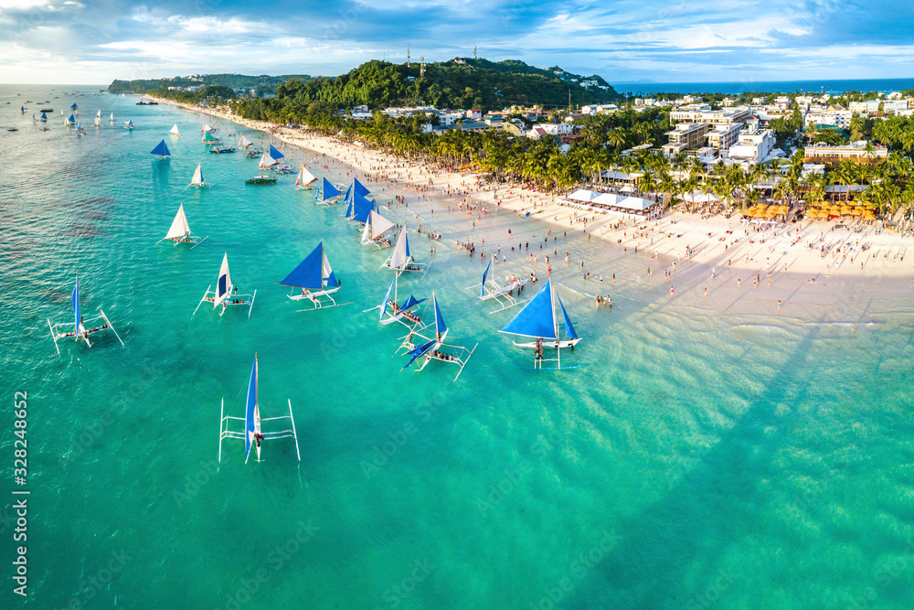
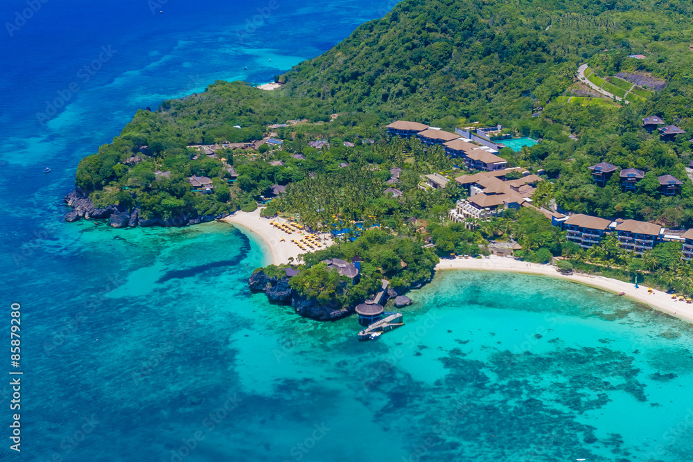
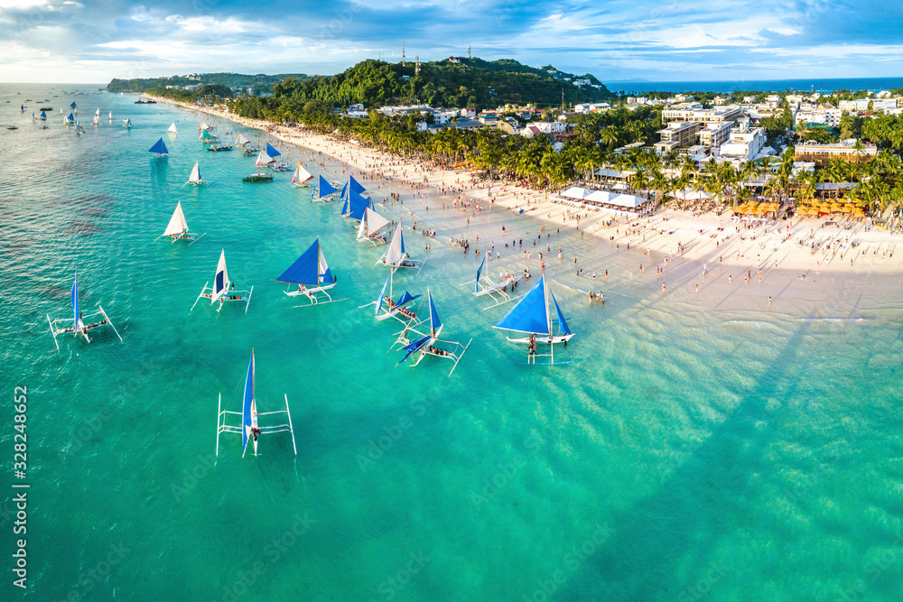
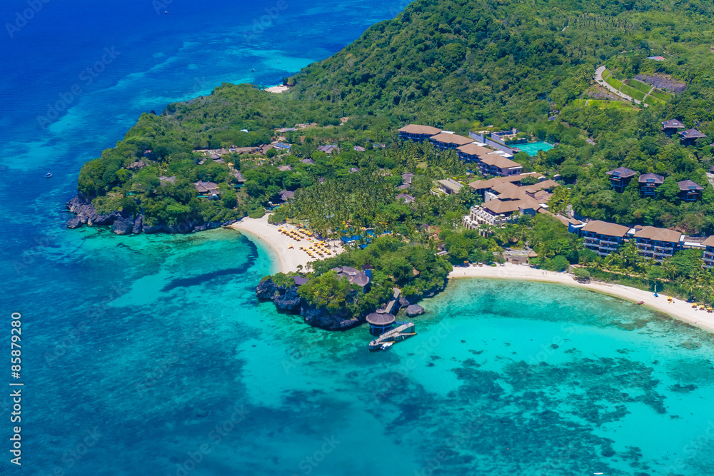

Boracay
Boracay is famous for its powdery white-sand beaches and crystal-clear blue waters. It is one of the top tourist destinations in the Philippines, offering water sports, vibrant nightlife, and relaxing seaside experiences.
 Boracay is famous for its powdery white-sand beaches and crystal-clear blue waters. It is one of the top tourist destinations in the Philippines, offering water sports, vibrant nightlife, and relaxing seaside experiences.
 